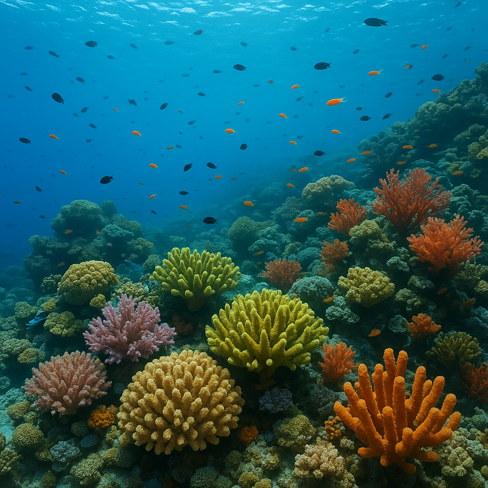

library("tidyverse")
library("ggridges")Group 14 Exam
This exam project has been conducted by group 14 which includes the students:
| Name | Student number |
|---|---|
| Caroline Sofie Hermannsen | s215016 |
| Helene Nielsen | s215037 |
| Kathrine Böech Kaas | s215052 |
| Nadia Hansen | s215055 |
All group members contributed equally.
Background
Coral reefs around the world are experiencing increased stress due to rising sea-surface temperatures and other climate-driven changes. Coral bleaching is the loss of symbiotic algae from coral tissues, which is often precipitated by thermal stress. It is one of the most visible and damaging consequences of these shifts. The study by Sully et al. 2019 called “A global analysis of coral bleaching over the past two decades,” published in Nature, addresses how bleaching patterns have varied globally over recent decades. This is used as the only reference throughout the report [1].
The consequences of coral bleaching affect the climate in terms of ecosystem damage due to loss of species and thereby biodiversity, but it also has major social and economic consequences for people who depend on reefs for food and tourism. The species loss can also mean indirect consequences in research e.g., loss of molecules that could have been discovered and used pharma industry or elsewhere.
Using field observations collected from 3,351 reef sites across 81 countries between 1998 and 2017. The authors combined these bleaching records with environmental and temperature metrics to identify spatial and temporal patterns.
In this project we perform Data Wrangling and Data Analysis on the datasets from the study. The datasets used are described in Data Description below and furthermore end with a conclusion.

Data Description
The data can be accessed in the raw –> data file in the Github project “Group_14_Project”. The original data has been downloaded from https://github.com/InstituteForGlobalEcology/Coral-bleaching-a-global-analysis-of-the-past-two-decades. The specific file: “Reef_Check_with_cortad_variables_with_annual_rate_of_SST_change.csv” has been the data file providing the information used for all of the findings in the project. Please note that this file was already fairly tidy, and for this reason it has been untidied and split into two seperated datasets called “reef_data_dataset1.csv” and “reef_data_dataset2.csv”. This provided a better opportunity for the group to show an understanding of more functions.
Aim
The aim of this project was to tidy and combine two datasets, and by doing this, be able to explore coral bleaching issues around the world. This was a collaborative project developed using Git and the workflow is also a part of the product.
During the project, we have followed the style of the “Data Science Cycle” as seen below. The work has primarily been focused on tidying as well as visualisation.

Load Libraries
We start by loading the relevant libraries.
Load Data
The two different datasets are loaded into the document and saved as data1 and data2. When viewing the two files, we see that they both contain ReefID_Name as the first column. This column is untidy since we have two different informations in one cell.
data1 <- read_csv("../data/_raw/reef_data_dataset1.csv")
data2 <- read_csv("../data/_raw/reef_data_dataset2.csv")Data Wrangling
Starting out with the data wrangling, we want to first combine the two datasets using the join function and combining them by their common column.
reef_combined_untidy <- data1 |>
left_join(data2, by = "ReefID_Name")
write_csv(reef_combined_untidy, "../data/_raw/reef_data_combined_untidy.csv")Now we want to tidy the dataset, and turn ReefID_Name into two separate variables. For this we use the seperate function and split them by “|”.
reef_combined_tidy <- reef_combined_untidy |>
separate(
col = "ReefID_Name",
into = c("Reef.ID", "Reef.Name"),
sep = " \\| "
) |>
relocate(Reef.ID, Reef.Name, .before = 1)
write_csv(reef_combined_tidy, "../data/_raw/reef_data_combined_tidy.csv")We want to check if the variable Ocean has any NA values. For this we can use the function count.
reef_combined_tidy |>
count(Ocean)# A tibble: 7 × 2
Ocean n
<chr> <int>
1 Arabian Gulf 718
2 Atlantic 10607
3 East Pacific 69
4 Indian 2721
5 Pacific 33576
6 Red Sea 3913
7 <NA> 57We want to remove all the observations where Ocean has NA values and we can see that 57 observations has NA values. For this we can use drop_na to remove them from the dataset.
reef_clean <-
reef_combined_tidy |>
drop_na(Ocean)We want to check how many observations we have for each year.
reef_clean |>
count(Year)# A tibble: 19 × 2
Year n
<dbl> <int>
1 1998 10
2 2000 11
3 2001 34
4 2002 450
5 2003 2597
6 2004 2648
7 2005 2983
8 2006 3766
9 2007 3866
10 2008 4061
11 2009 4098
12 2010 3875
13 2011 4425
14 2012 3720
15 2013 3353
16 2014 3687
17 2015 3751
18 2016 3039
19 2017 1230We see that three years (1998, 2000 and 2001) do not contain many observations. We filter them out.
reef_clean <- reef_clean |>
filter(Year != 1998,
Year != 2000,
Year != 2001)Data Analysis
Now the dataset is tidy, and we can begin analysis.
We make a plot based on the different oceans to see if any ocean stands out.
reef_clean |>
ggplot(aes(x = Ocean, fill = Ocean)) +
geom_bar(colour = "black", alpha = 0.5) +
scale_fill_viridis_d(option = "plasma") +
labs(
title = "Number of Observations per Ocean",
x = "Ocean",
y = "Count",
fill = "Ocean"
) +
theme_minimal(base_size = 12) +
theme(
legend.position = "bottom",
axis.text.x = element_text(angle = 45, hjust = 1)
)
From the above, we see that the East Pacific has few data points. We count them:
reef_clean |>
count(Ocean)# A tibble: 6 × 2
Ocean n
<chr> <int>
1 Arabian Gulf 718
2 Atlantic 10607
3 East Pacific 69
4 Indian 2716
5 Pacific 33526
6 Red Sea 3913We conclude that the East Pacific has too few data points for further analysis when comparing to the other oceans. Hence, we filter it out.
reef_clean <- reef_clean |>
filter(Ocean != "East Pacific")We want to add another column with the temperatures in degrees Celsius using the mutate function. This is for the following density plot.
reef_clean <- reef_clean |>
mutate(Temperature_Celsius = Temperature_Kelvin - 273.15)We look at the temperatures in the different oceans to get insights into the dataset:
ggplot(data = reef_clean,
mapping = aes(x = Temperature_Celsius,
y = Ocean,
fill = Ocean)) +
geom_density_ridges(alpha = 0.5) +
scale_fill_viridis_d(option = "plasma") +
labs(x = "Temperature in Celsius",
y = "Ocean",
title = "Temperatures measured in the different oceans",
caption = "x") +
theme_minimal(base_family = "Avenir",
base_size = 12) +
theme(legend.position = "bottom")
The reason for the variations in temperature is that the samples are taken at different sites and timepoints.
We now investigate the temperature development over time.
ggplot(data = reef_clean,
mapping = aes(x = Year,
y = Temperature_Celsius)) +
geom_point(color= "#0D0887", alpha = (0.5)) +
geom_smooth(method = "lm",
se = FALSE,
color = "red",
linewidth = 1.0) +
labs(x = "Year", y = "Temperature_Celsius", title = "Temperature development over the years", fill="Ocean", color="Ocean") +
theme_minimal(base_family = "Avenir",
base_size = 12) +
theme(legend.position = "bottom")+
facet_wrap(~ Ocean)
In the Red Sea and the Arabian Gulf, the temperature has decreased in the included time period, whereas in the temperature in the Pacific, Atlantic and Indian Sea has increased. It is important to highlight that this only reflects the temperature where the samples were taken and not nessercerily the overall climate tendency.
We here investigate the latitude and temperature connection.
ggplot(data = reef_clean,
mapping = aes(x = Latitude.Degrees,
y = Temperature_Celsius)) +
geom_point(color= "#0D0887", alpha = (0.5)) +
labs(x = "Latidtude in Degrees", y = "Temperature in Celsius", title = "Temperature at different latitudes", fill = "Ocean", color = "Ocean") +
theme_minimal(base_family = "Avenir",
base_size = 12) +
theme(legend.position = "bottom")+
facet_wrap(~ Ocean)
The possitive latitudes are north from equator and the negative are south. The data points from the Pacific, Atlantic, and Indian oceans cover both equator, north and south, with the pacific ocean having a more even spread of data points covering the latitude range.
We note that there is a great variation in the measured temperatures at the same latitudes. We investigate the depths of the sampling affect on the temperature.
ggplot(data = reef_clean,
mapping = aes(x = Temperature_Celsius,
y = Depth)) +
geom_point(color= "#0D0887", alpha = (0.5)) +
labs(x = "Temperature in Celsius", y = "Depth [m]", title = "Depth effect on temperature", fill = "Ocean", color = "Ocean") +
theme_minimal(base_family = "Avenir",
base_size = 12) +
theme(legend.position = "bottom")+
facet_wrap(~ Ocean)
There seems to be no clear relationship between the temperature and the depth of the measurement. We try and see this with numbers. We make a variable called depth_group in which the observations get allocated to.
reef_clean <- reef_clean |>
mutate(depth_group = cut(
Depth,
breaks = seq(0, max(Depth), by = 3),
right = FALSE
)
)Here we see the results.
reef_clean |>
group_by(Ocean, depth_group) |>
summarise(mean_temp = mean(Temperature_Celsius, na.rm = TRUE), .groups = "drop") |>
pivot_wider(
names_from = Ocean,
values_from = mean_temp
)# A tibble: 8 × 6
depth_group `Arabian Gulf` Atlantic Indian Pacific `Red Sea`
<fct> <dbl> <dbl> <dbl> <dbl> <dbl>
1 [0,3) 30.0 28.0 27.4 27.9 26.8
2 [3,6) 29.1 28.4 27.9 28.2 25.4
3 [6,9) 29.7 27.9 27.3 28.6 25.6
4 [9,12) 29.4 27.9 27.0 28.5 25.2
5 [12,15) NA 27.5 28.5 29.3 26.8
6 [15,18) NA 28.3 27.8 28.1 25.7
7 [18,21) NA 27.8 NA 27.9 NA
8 <NA> NA 27.5 NA 26.2 NA The depths will not be taken into further account and do not seem to influence the temperature in the seas.
Zooming in on the Pacific Ocean
Due to the Pacific Ocean having a lot of data points distributed along the latitudes, we go further with the bleaching analysis in this ocean.
We combine ggplot in a pipeline to only see the Pacific Ocean data with latitudes and average bleaching.
reef_clean |>
select(Ocean = Pacific) |>
ggplot(data = reef_clean,
mapping = aes(x = Latitude.Degrees,
y = Average_bleaching)) +
geom_point(color= "#0D0887", alpha = (0.5)) +
labs(x = "Latitude in degrees", y = "Average bleaching", title = "Average bleaching in the Pacific based on latitude", fill = "Ocean", color = "Ocean")+
theme_minimal(base_family = "Avenir",
base_size = 12) +
theme(legend.position = "bottom")
The average bleaching seems higher for latitudes from -5 and further south and +5 and further north. Also, it seems like there is more average bleaching at higher latitudes. A hypothesis can be that it is due to higher species diversity at lower latitudes, resulting in a higher robustness against temperature variations.
Lastly, we investigate the average bleaching over the years for the Pacific Ocean. To do this, we make a new dataset containing the year and the average bleaching measured for that year.
data_pacific_yearly <- reef_clean |>
filter(Ocean == "Pacific") |>
group_by(Year) |>
summarise(mean_bleaching = mean(Average_bleaching, na.rm = TRUE))We plot the data together with a regression to investigate if coral bleaching has become worse over the years in the Pacific.
data_pacific_yearly |>
ggplot(aes(x = Year, y = mean_bleaching)) +
geom_col(fill = "#0D0887", alpha = 0.5) +
geom_smooth(
method = "lm",
se = FALSE,
color = "red",
linewidth = 1.3
) +
scale_x_continuous(breaks = data_pacific_yearly$Year) +
labs(title = "Mean Coral Bleaching per Year (Pacific Ocean)",
x = "Year", y = "Mean % Bleaching"
) +
theme_minimal(base_size = 12) +
theme(axis.text.x = element_text(angle = 45, hjust = 1))`geom_smooth()` using formula = 'y ~ x'
We make a model to extract some information about the linear fit.
model <- lm(mean_bleaching ~ Year, data = data_pacific_yearly)
summary(model)
Call:
lm(formula = mean_bleaching ~ Year, data = data_pacific_yearly)
Residuals:
Min 1Q Median 3Q Max
-1.3032 -0.5607 -0.2361 0.2789 2.1769
Coefficients:
Estimate Std. Error t value Pr(>|t|)
(Intercept) -475.56896 102.30550 -4.649 0.000376 ***
Year 0.23804 0.05091 4.676 0.000357 ***
---
Signif. codes: 0 '***' 0.001 '**' 0.01 '*' 0.05 '.' 0.1 ' ' 1
Residual standard error: 0.9387 on 14 degrees of freedom
Multiple R-squared: 0.6096, Adjusted R-squared: 0.5817
F-statistic: 21.86 on 1 and 14 DF, p-value: 0.0003572We see that the adjusted R-squared value is 0.5817, which is not high enough to conclude anything with certainty. However, the results can still be used to see a tendency.
Conclusion
Coral bleaching is a global issue and requires samples from around the world, resulting in enormous datasets. To evaluate some of the findings from these many data points from 2002-2017 R has been a good tool. We showed some general information about the data, and concluded that there is a tendency that coral bleaching is increasing in the Pacific. Similar analysis can be performed on other Oceans, but there should still be an attention to, if the ocean has enough data points.
References
[1] Sully, S., Burkepile, D.E., Donovan, M.K. et al. A global analysis of coral bleaching over the past two decades. Nat Commun 10, 1264 (2019). https://doi.org/10.1038/s41467-019-09238-2